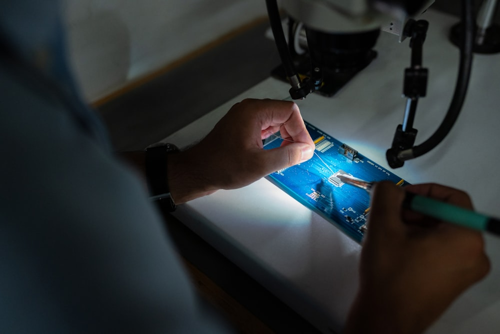

Cosa ripariamo
Il punto chiave è togliere subito ogni dubbio su cosa trattate.
La landing ordina i servizi in modo leggibile per chi cerca assistenza tecnica senza voler leggere pagine troppo complesse.

TV ed elettronica di consumo
Un blocco chiaro per chi cerca assistenza su apparecchi comuni e vuole capire subito se siete il contatto giusto.
- Assistenza tecnica specializzata
- Messaggio semplice e rassicurante
- Contatto rapido senza dispersione

Diagnosi e riparazione
Il cuore della pagina: far percepire competenza, metodo e capacità di presa in carico del problema.
- Verifica guasto e assistenza
- Tono tecnico ma accessibile
- Impostazione da laboratorio serio
Contatto immediato
Per chi ha bisogno di parlare con qualcuno in pochi secondi e capire come procedere.
- Telefono in evidenza
- Email e form di richiesta
- Percorso breve verso l'assistenza
Come funziona
Una sequenza lineare per rendere il servizio più facile da capire.

Il cliente capisce subito come prendere contatto e spiegare la sua esigenza.

La pagina suggerisce velocità e presa in carico, che in questo settore contano molto.

Il laboratorio viene percepito come il posto giusto dove affidare l'apparecchio.

Il tono resta rassicurante e diretto fino alla fine del percorso.
Perché scegliere noi
Una landing utile soprattutto per chi non ha tempo e vuole capire subito se chiamare.
Per un'attività di assistenza tecnica la chiarezza iniziale vale moltissimo: spiega il servizio, aumenta la fiducia e invita al contatto più rapidamente.
Treviso
Assistenza tecnica
Riparazioni
Esperienza
Laboratorio
Contatto immediato
La pagina comunica competenza senza diventare fredda o complicata da leggere.
Chi arriva online capisce subito il tipo di assistenza offerta e come muoversi.
0422 436245 · info@assistenzaelettronicasrl.it


Testimonianze
Placeholder credibili per sostenere affidabilità e rapidità del servizio.
“Molto chiari fin dal primo contatto. Ho capito subito a chi rivolgermi e come procedere.”
Paolo C. Treviso“Il valore qui è la semplicità: servizio tecnico, ma spiegato bene e senza complicazioni.”
Lucia M. Cliente laboratorio“Una pagina così aiuterebbe molto chi arriva da Google e vuole solo capire se chiamare oppure no.”
Stefano R. Assistenza rapida
Contatti
Richiedi assistenza in pochi secondi.
Telefono, email e modulo breve rendono la pagina immediatamente utile per chi arriva da ricerca locale o da passaparola.
Telefono
0422 436245